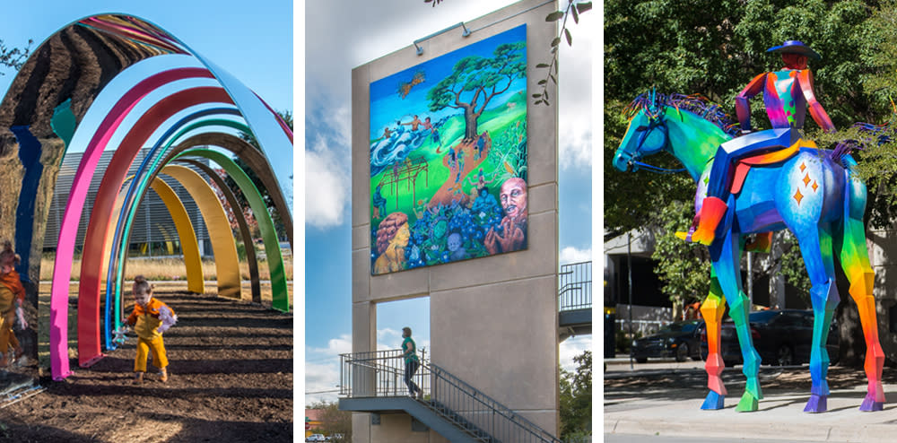

THINGS TO DO & VISIT IN AUSTIN
Live music is everywhere in Austin. You'll find musicians performing all over town, from the airport terminal to grocery stores. They play outdoors at seasonal live music series and at world-famous festivals. Nightly, you'll find Austin musicians at clubs, coffeehouses, bars, taquerias, sporting events, and concert halls - and with more than 250 live music venues, it can be intimidating knowing where to start.
Austin is known for its creativity. With good reason. Not only are we home to some world-class museums like the Blanton, with the nation's largest University-owned collection on exhibit, and the Harry Ransom Center, featuring the First Photograph and Gutenberg Bible, we're also home to plenty of artists themselves. You can explore the work of designers, painters, sculptors, writers, photographers, filmmakers, dancers and musicians here, at any time of year, any day of the week, in a variety of venues
